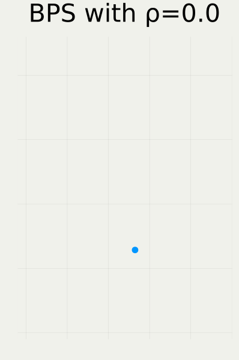
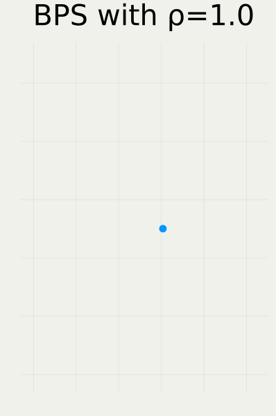
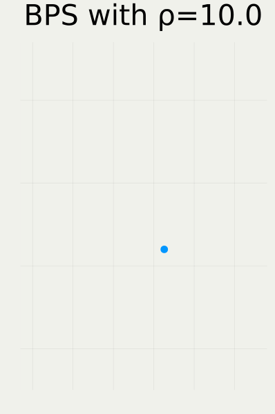
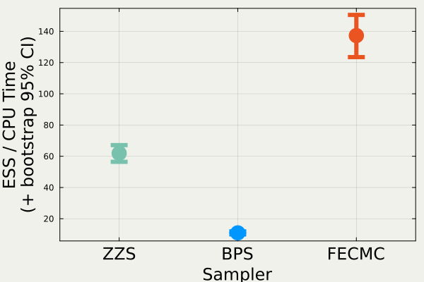

1 背景：PDMP の目指す下剋上

A Blog Entry on Bayesian Computation by an Applied Mathematician
$$
$$
1.1 モンテカルロ法小史

（1953〜）

（1978〜）

（2008〜）
1.2 Piecewise Deterministic Markov Process

秘訣：SDE より ODE の離散化の方が簡単・安定


1.3 新しい離散化パラダイムとしての PDMP
PDMP サンプラーは ODE Solver なしで Hamiltonian flow を近似できる

symplectic integrator で離散化
O(d^{1.25}) の計算複雑性

大量の Poisson 点測度 で近似
通常時は O(d^{1.5}) の計算複雑性
1.4 PDMP は離散化法としての自由度が極めて高い

スパースな相互作用を持つマルコフ確率場モデル（d=10）
局所実装
BPS で，sparsity を利用した実装をすると，HMC よりも「推定量の分散／時」が良い．

Stochastic Gradient
横軸：観測数 n，縦軸：有効サンプル数．
ロジスティック回帰（d=16）．
Zig-Zag で，control variate を用いると，データサイズ n に対して O(1) の性能
n\to\infty の極限で Langevin を越す．
2 等速直線ダイナミクス
でどこまで行けるか？
2.1 PDMP \textcolor{#E95420}{\{X_t\}} のスケーリング解析
定常分布 X_0\sim\pi から実行したときの低次元射影 \textcolor{#0096FF}{Y_t^{(d)}}:=\frac{U(\textcolor{#E95420}{X_{d^\gamma t}})-\operatorname{E}_\pi[U(\textcolor{#E95420}{X_{d^\gamma t}})]}{\sqrt{\mathrm{Var}_\pi[U(\textcolor{#E95420}{X_{d^\gamma t}})]}},\quad U:\mathbb{R}^d\to\mathbb{R}\text{: 射影},\;\textcolor{#E95420}{\gamma}>0 の，d\to\infty の極限での挙動を解析する．
- U(x)=x_1：有限次元周辺過程
- U(x)=-\log\pi(x)：負の対数密度
- 酔歩 MH は U(x)=x_1 で \gamma=1
- Langevin は U(x)=x_1 で \gamma=1/3
2.2 BPS の拡散スケーリング極限（\gamma=1）
\textcolor{#0096FF}{Y_t^{(d)}} を U(x)=-\log\pi(x) について，d=10^2,10^3,10^4 でプロットしてみる：

2.3 先行研究：Zig-Zag v. BPS (Bierkens et al., 2020)

L(s,t)=2-\int^t_s\int^t_sK(u,v)\,dudv
K は動径運動量 R のカーネル K(s,t)=\operatorname{E}[R_sR_t]

dY_t=-\frac{\sigma^2(\rho)}{4}Y_t\,dt+\sigma(\rho)\,dB_t \sigma^2(\rho)=8\int^\infty_0e^{-\rho s}K(s,0)\,ds
2.4 BPS の大域的リフレッシュ動作



2.5 説明したいもの：Zig-Zag v. BPS v. FECMC

2.6 FECMC のスケーリング極限

dY_t^{\textcolor{#0096FF}{\text{B}}}=-\frac{\sigma^2_{\textcolor{#0096FF}{\text{B}}}(\rho)}{4}Y_t^{\textcolor{#0096FF}{\text{B}}}\,dt+\sigma_{\textcolor{#0096FF}{\text{B}}}(\rho)\,dB_t \sigma^2_{\textcolor{#0096FF}{\text{B}}}(\rho)=8\int^\infty_0e^{-\rho s}\operatorname{E}[R_0^{\textcolor{#0096FF}{\text{B}}}R_s^{\textcolor{#0096FF}{\text{B}}}]\,ds

dY_t^{\textcolor{#E95420}{\text{F}}}=-\frac{\sigma^2_{\textcolor{#E95420}{\text{F}}}(\rho)}{4}Y_t^{\textcolor{#E95420}{\text{F}}}\,dt+\sigma_{\textcolor{#E95420}{\text{F}}}(\rho)\,dB_t \sigma^2_{\textcolor{#E95420}{\text{F}}}(\rho)=8\int^\infty_0e^{-\rho s}\operatorname{E}[R_0^{\textcolor{#E95420}{\text{F}}}R_s^{\textcolor{#E95420}{\text{F}}}]\,ds
2.7 拡散係数の表示
\begin{align*} \underbrace{\frac{\sigma^2(0)}{4}=2\int^\infty_0\operatorname{E}[R_0R_t]\,dt}_{\text{Green--Kubo 公式}}=\operatorname{E}\biggl[R_0\underbrace{\int^\infty_0\operatorname{E}[R_t|R_0]\,dt}_{=:f(R_0)}\biggr]=\operatorname{E}[R_0f(R_0)] \end{align*} この関数 f は，動径運動量 R の生成作用素 L に関して次を満たす： \text{Poisson 方程式：}\quad-Lf(x)=x
2.8 拡散係数の比較 BPS v. FECMC

2.9 拡散係数 ≒ モンテカルロ漸近分散 ≒ ESS
分布 \pi のエントロピー H(\pi):=\operatorname{E}_\pi[U(X)],\qquad U(x)=-\log\pi(x) の推定を考える．Monte Carlo 推定量（＝PDMP \textcolor{#E95420}{\{X_t\}} の時間平均） \widehat{h}_T:=\frac{1}{T}\int^T_0U(\textcolor{#E95420}{X_s})\,ds の漸近分散比は，高次元極限では次で与えられる： \lim_{T\to\infty}\lim_{d\to\infty}T\frac{\mathrm{Var}[\widehat{h}_{\textcolor{#E95420}{d}T}]}{\mathrm{Var}_\pi[U(X)]}=\frac{8}{\sigma^2}\approx2.50\cdots
2.10 実験との整合：BPS v. FECMC

3 応用：PDMP の収束判定
PDMP には補助変数 \textcolor{#0096FF}{\{V_t\}} があり，これを利用することで漸近分散推定量の分散を改善することができる．
3.1 代替推定量の候補
推定対象 U(x)=-\log\pi(x) の代わりに，その時間微分 g(x,\dot{x}):=\dot{U} を考える U(x)=\frac{\|x\|^2}{2}\quad\text{のときは}\quad g(x,v)=\langle x,v\rangle.
→ \textcolor{#E95420}{d} が大きいほど，\sigma^2 の値を知るのに，\widehat{g}^d_T を使った方が有利？
\widehat{g}_T:=\frac{1}{T}\int^T_0g(X_t,V_t)\,dt=\frac{1}{T}\int^T_0R_t\,dt.
3.2 実験結果：既存手法 v. 提案手法

3.2 非等方的 Gauss：既存手法 v. 提案手法